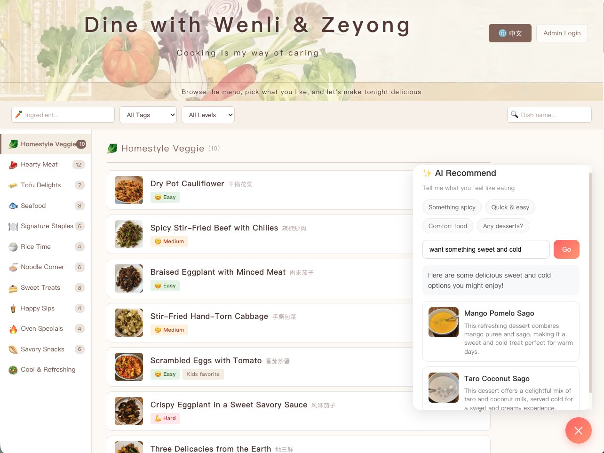
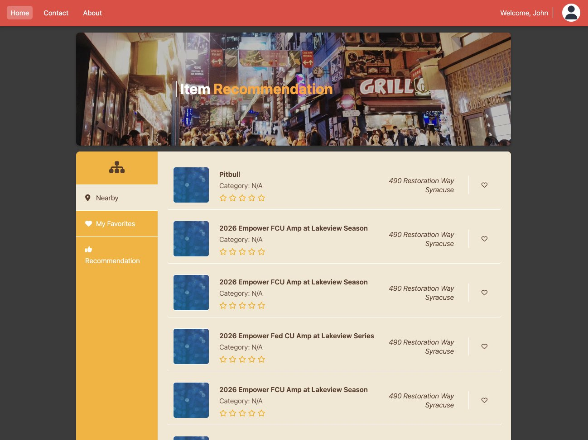
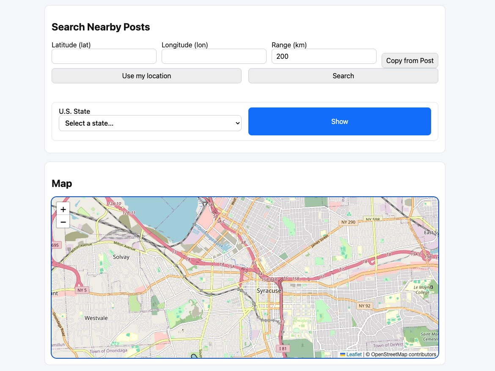
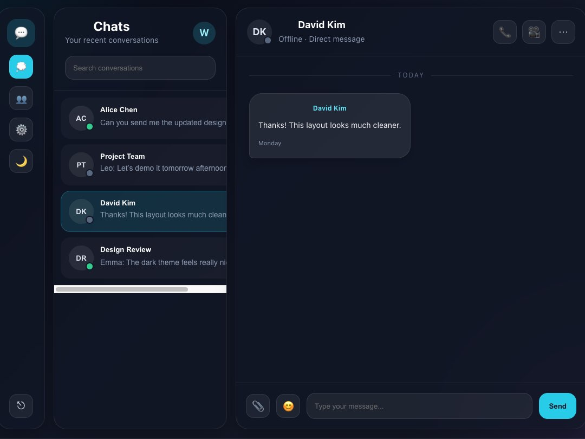

About me
I’m Wenli, a CS student and self-taught developer. I like building real-world projects, usually with my cat sitting next to me while I work. Outside of code, you’ll find me cooking, baking, taking photos, or dancing. I enjoy connecting with people and making new friends.
Skills
Syracuse University | Master of Computer Science
Syracuse, NY, US
Anhui University | Master of Finance
Hefei, Anhui, China
Zhejiang University of Finance & Economics | Bachelor of International Economics and Trade
Hangzhou, Zhejiang, China
ZKXT Ruyun Technology Co., Ltd.
Software Engineering Intern
• Built RESTful APIs with Spring Boot and MyBatis-Plus for student enrollment, scheduling, and instructor management
• Developed role-based access control for admin and instructor operations to ensure secure and authorized data modification
• Optimized backend performance by integrating Redis caching on announcement endpoints, reducing MySQL load by 40%
• Participated in Agile sprints with Git-based workflows, wrote JUnit tests, and deployed builds to test servers via Maven
• Partnered with front-end developers to align API responses and improve client-side rendering speed and user experience
China Everbright Bank
Data Analyst Intern
• Developed automated Python scripts to generate daily transaction summary reports, reducing manual processing time by 40%
• Wrote complex SQL queries to extract, transform, and clean financial data from internal databases for business insights
• Collaborated with IT and risk teams to optimize the pipeline for compliance reporting, improving efficiency and integrity
Recent Work & Projects

Dine with Wenli Try Me 😋Personal Recipe Collection & Management Platform
A bilingual (Chinese/English) personal recipe website where I showcase my home-cooked dishes. The site features a clean, warm aesthetic with a category-based browsing experience. Visitors can explore recipes by category, difficulty, ingredients, and custom tags.
As the admin, I can manage all recipes directly from the frontend — adding, editing, and deleting dishes with image uploads, all persisted to GitHub as a backend-free data store.
- Tech Stack - React, GitHub API (data & image storage), GitHub OAuth, Vercel, CSS3
- Highlights - Serverless architecture, GitHub-as-database, bilingual with smart fallback, category sidebar with scroll sync, responsive mobile layout
- Type - Full-Stack Web Application (Serverless)
- Live Site - Open DineWithWenli
- GitHub - View on GitHub

EventHub Live DemoEvent Search & Recommendation Backend
An event discovery application that allows users to search for events by location and keywords, view event details, and save personalized favorites. The system also provides recommendations based on user preferences and location.
I implemented the backend using Java and Spring Boot, integrated the Ticketmaster API for real-time event data, and used MySQL to persist user activity and event information. The application is deployed on AWS EC2, simulating a real-world backend system with API design, data persistence, and cloud deployment.
- Tech Stack - Java, Spring Boot, MySQL, Ticketmaster API, AWS EC2
- Highlights - Event search, personalized favorites, recommendation logic, API integration
- Type - Backend-Driven Web Application
- Live Demo - Open EventHub
- GitHub - View on GitHub

GeoConnect Live DemoLocation-based Social Posting Platform
A location-based social posting application where users can sign up, share posts with images, and connect each post to a real-world location. Other users can then discover nearby posts instantly, making the experience more interactive and location-aware.
I built the backend in Go and used Elasticsearch to power geo-search and nearby post discovery. I also integrated Google Cloud Storage for image handling, implemented JWT authentication with role-based access control, and deployed the system on Google App Engine to practice cloud deployment and scalable backend design.
- Tech Stack - Go, Elasticsearch, Google Cloud Storage, Google App Engine, JWT, REST APIs
- Highlights - Geo-search, nearby post discovery, image uploads, role-based authentication
- Type - Backend-Driven Social Platform
- Live Demo - Open GeoConnect
- GitHub - View on GitHub

QQChat Real-Time Messaging System
A real-time chat system built in Java that supports private messaging, group chat, and online user tracking. The project works like a lightweight chat application and helped me better understand how real-time communication systems work at a lower level.
I implemented it using Java Socket programming and multithreading, with custom serializable message objects for communication between clients and the server. On the server side, I used one thread per client and maintained an online user map for message routing, while the client uses a command-line interface with a background listener thread to receive messages without blocking user input.
- Tech Stack - Java, Socket API, Multithreading, Client-Server Architecture
- Highlights - Real-time messaging, online user queries, message routing, concurrent connections
- Type - Networking-Based Java Application
- GitHub - View on GitHub
Contact me!
wenlifeicode@gmail.com